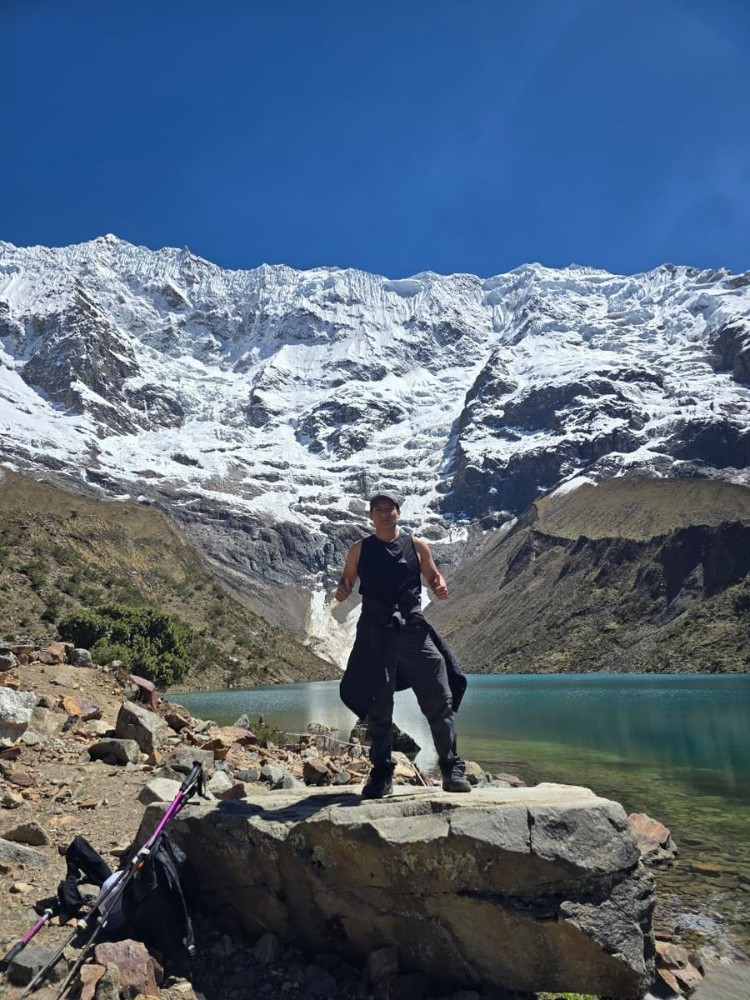

01 · Sobre mí
Un poco de mí.
De dónde vengo, en qué ando y qué hago cuando no estoy frente a la computadora.
Me llamo Marlon Alessandro Soto Rumiche. Soy de Coishco y estoy en décimo ciclo de Ingeniería de Sistemas e Informática en la Universidad Nacional del Santa.
Este año ha sido bastante movido. Entre abril y mayo hice mis prácticas en Softmabe, en desarrollo full stack. En septiembre me fui un mes a Cusco por una pasantía nacional, y desde octubre soy voluntario en la Corte Superior de Justicia del Santa, en Chimbote.
Además estoy empezando un negocio propio. Vendo accesorios para celular, iPhones y relojes, y estoy aprendiendo a trabajar con importaciones.
Cuando no estoy en eso, estoy haciendo deporte. Salgo a correr, juego fútbol con mis amigos y voy al gimnasio. Es lo que me ayuda a desconectarme y a llevar la semana con algo de orden.
Lo que me gusta
- Correr
- Fútbol
- Gimnasio
- Salir con amigos
- Conocer lugares nuevos
- Tecnología


¿Quieres escribirme?
Lo más rápido es WhatsApp. Te respondo apenas pueda.